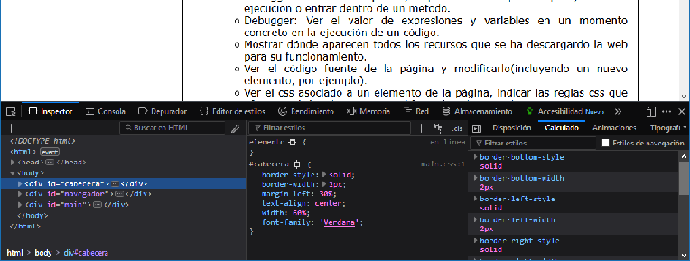
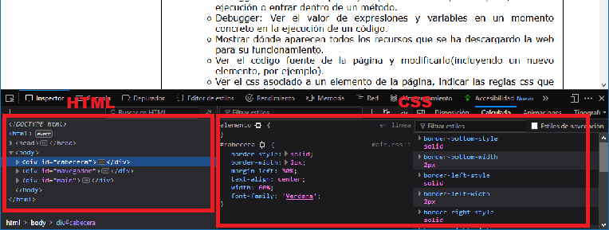

Para poder ver el código fuente de una página debemos acceder al inspector de las herramientas de desarrollo, esto lo podemos hacer de varias formas distintas:
- Desde la barra de menú del navegador: Desarrollo web > Inspector.
- Pulsando la tecla F12.
- Utilizando la ocmbinación de teclas Ctrl + Mayús + C.
- Si deseamos ver el código de una parte concreta de la web: Seleccionamos la parte deseada > Click derecho > Inspeccionar elemento.
El inspector se habrá desplegado en la parte inferior del navegador:

Podemos comprobar que el inspector se divide principalmente en dos partes: HTML a la izquierda y CSS a la derecha:

Si deseamos modificar el código fuente sólo tenemos que seleccionar qué parte de la página deseamos cambiar dentro del inspector y modificarla, podemos modificar tanto la parte de HTML como la de CSS.